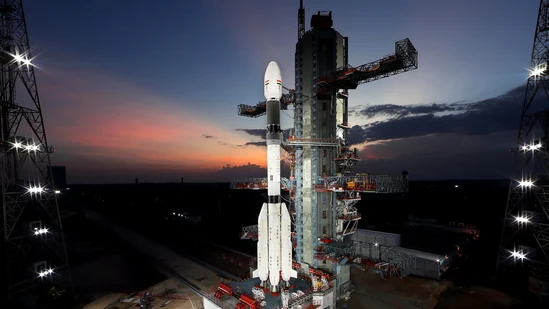

Indian space research organization
- Indian Space Research Organisation, formed in 1969, superseded the erstwhile INCOSPAR. Vikram Sarabhai, having identified the role and importance of space technology in a Nation's development, provided ISRO the necessary direction to function as an agent of development.
- Within six years of formation, ISRO launched Aryabhata, the first Indian Satellite, on April 19, 1975
- Satellite Launch Vehicle-3 or SLV-3, India's first experimental satellite launch vehicle, weighing 17 tonne was send into orbit by ISRO. The project was spearheaded by APJ Abdul Kalam, who went on to become the president of India in 2002.
- ISRO develops BHUVAN, a 3D satellite imagery tool which allows users to explore the Earth's surface in a 2D/3D dimension. The application is similar to Google Earth.
- In 1981, ISRO once transported Apple Satellite, an experimental geo-stationary communication satellite, on a bullock cart for antenna-range test. The satellite was carried on the wooden cart, as the alternative trucks made of metal could interfere with the satellite’s signals.
- ISRO has successfully undertaken 101 spacecraft missions with 71 launch missions, two re-entry missions, and has launched close to 269 foreign satellites including some belonging to the US.
- In 2013, ISRO sent an orbiter to Mars at a cost of $74 million. India was the first country ever to achieve the feat in the first attempt.
- In 2008, India launched Chandrayaan, a lunar orbiter which found evidence of water on the moon. With Chandrayaan, India became the fourth country in the world to successfully land on the lunar surface.
FOR MORE INFORMATION AND REFERENCE: https://www.moneycontrol.com/news/photos/india/amazing-facts-about-isro-do-you-know-the-budget-of-indias-space-exploration-agency-3395061.html